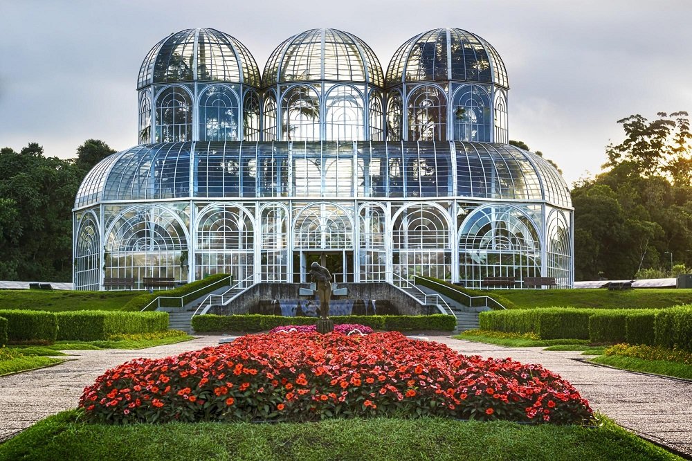
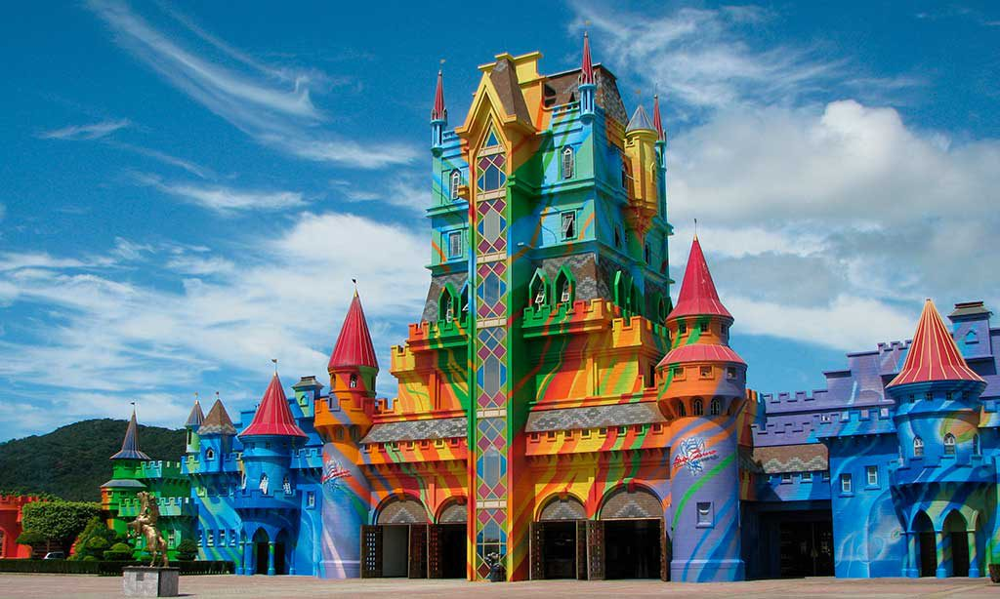
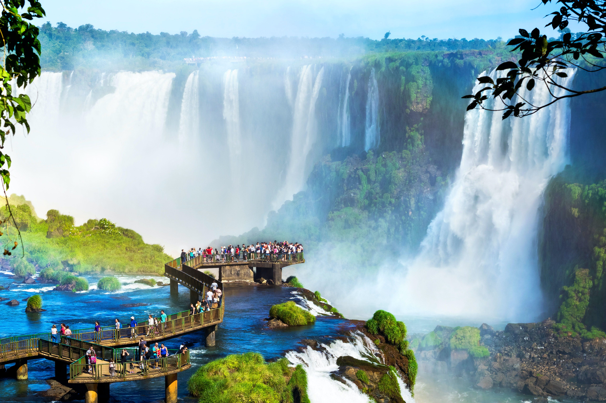
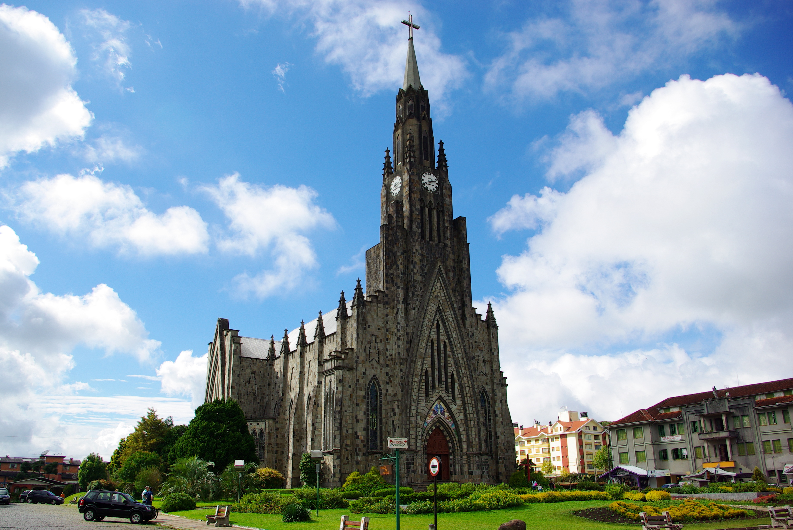
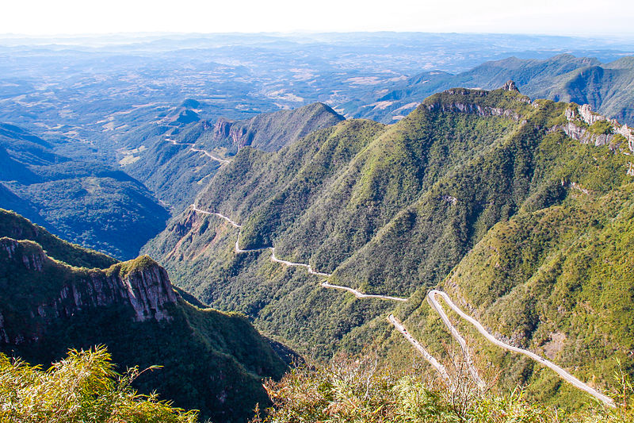

|  |
O Jardim Botânico de Curitiba, ou Jardim Botânico Francisca Richbieter, é um dos principais pontos turísticos da cidade de Curitiba, capital do estado brasileiro do Paraná. Localiza-se no bairro Jardim Botânico. Em 2007 foi o monumento mais votado numa eleição para escolha das Sete Maravilhas do Brasil, promovido pelo site Mapa-Mundi. Inaugurado em 5 de outubro de 1991, seu nome oficial (J.B. Francisca Richbieter) presta uma homenagem à urbanista Francisca Maria Garfunkel Rischbieter, uma das pioneiras no trabalho de planejamento urbano da capital paranaense). Todo o Jardim Botânico possui uma área total de 278 mil metros quadrados, incluindo o bosque com mata atlântica preservada. Localiza-se na rua Engenheiro Ostoja Roguski (primeira perimetral dos bairros), bairro Jardim Botânico. |
|  |
Beto Carrero World é um parque temático localizado no litoral norte do estado de Santa Catarina, Brasil. Inaugurado no dia 28 de dezembro de 1991, pelo seu idealizador João Batista Sérgio Murad, artisticamente conhecido como Beto Carrero, o parque foi desenvolvido em uma área de 14 milhões de metros quadrados. O Beto Carrero World está localizado no município de Penha, a 35 quilômetros de Balneário Camboriú, 60 km de Blumenau, 66 km de Joinville e próximo ao Aeroporto de Navegantes. A partir da BR-101, são pouco mais de seis quilômetros até a entrada do Beto Carrero World, igualmente por pista dupla de asfalto. O empreendimento é considerado o maior parque temático da América Latina e, em 2014, foi considerado o 6° melhor parque de diversão do mundo por usuários do site TripAdvisor. |
|  |
Parque Nacional do Iguaçu é uma área protegida brasileira, do grupo das Unidades de Conservação. Está localizado na região Extremo Oeste Paranaense, a 17 km do centro da cidade de Foz do Iguaçu e a apenas 5 km do Aeroporto Internacional de Foz do Iguaçu. O Parque Nacional tem uma área total de 169695,88 hectares, e nele se encontra um dos mais espetaculares conjuntos de cataratas da Terra, as Cataratas do Iguaçu. É administrado pelo Instituto Chico Mendes de Conservação da Biodiversidade (ICMBio). |
|  |
A Igreja Matriz de Nossa Senhora de Lourdes, mais conhecida como Catedral de Pedra, na verdade não é uma Catedral. A Igreja Nossa Senhora de Lourdes, localizada no município brasileiro de Canela, no Rio Grande do Sul, é uma paróquia que pertence à Área Serra da Diocese de Novo Hamburgo. É uma grande atração turística da Serra Gaúcha. A Catedral de uma Diocese é onde se encontra a Cátedra do Bispo local, que no caso da Diocese de Novo Hamburgo, é a Catedral São Luiz Gonzaga, na cidade de Novo Hamburgo - RS. |
|  |
A serra do Rio do Rastro é uma das serras de Santa Catarina, localizada no sul do estado. É cortada pela rodovia SC-390.[1] Com muitas matas e cachoeiras, é um dos cartões-postais do estado. Localiza-se no município de Lauro Müller, a mais de 1421 metros de altitude. Um mirante localizado em seu topo proporciona uma visão panorâmica. O ponto mais elevado, próximo da sua descida a sudeste, é o morro da Ronda, onde há um banco de frente ao cânion de mesmo nome e possibilita o acesso pela rodovia, a sul (cerca de 500 m da SC-438) que leva ao interior de Bom Jardim da Serra, junto aos Aparados da Serra e tem 1507 m de altitude. |